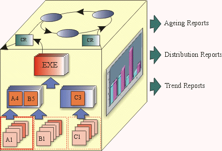

Concepts:
Configuration Status Reporting
Topics
Configuration
Status Accounting (Measurement) – is used to describe the ‘state’ of
the product based on the type, number, rate and severity of defects found, and
fixed, during the course of product development. Metrics derived under this
aspect of Configuration Management are useful in determining the overall
completeness status of the project.
The four principle sources for software Configuration Status Reports are:
- Change Requests,
- Software Builds,
- Version Descriptions, and
- Audits.
A Change Request (CR) is a general term for a request to change an artifact
or process. The general process associated with CRs is described in Concepts:
Change Request Management.
The status ‘tags’ provide the basis for reporting CR (aging, distribution
or trend) statistics as described in the CRM process steps.
Change Request based defect reports fall under the following categories:
- Aging (Time Based Reports)
How long have Change Requests of the various kinds been open? What is the
‘lag time’’ of when in the lifecycle defects are found, versus when are
they being fixed?
- Distribution (Count Based Reports)
How many Change Requests are there in the various categories by owner,
priority or state of fix?
- Trend (Time and Count Related Reports)
What is the cumulative number of defects being found and fixed over time?
What is the rate of defect discovery and fix? What is the ‘quality gap’ in
terms of open versus closed defects? What is the average defect resolution
time?

Build Reports list all the files, their location, and incorporated changes
that make up a build for a specific version of the software.
Build Reports can be maintained both at the system and subsystem level.
Similar to Release Notes, Version Descriptions describe the details of a
software release. As a minimum the description needs to include the following:
- Inventory of material released (physical media and documents),
- Inventory of software contents (file listings),
- All unique-to-site ‘adaptation’ data,
- Installation instructions, and
- Possible problems and known errors.
There two kinds of audits that are covered in the context of Configuration
Management:
- Physical Configuration Audits, and
- Functional Configuration Audits.
A Physical Configuration Audit (PCA) identifies the components of a product
to be deployed from the Project Repository.
A Functional Configuration Audit (FCA) confirms that a baseline meets the
requirements targeted for the baseline.
The detailed activity for performing Audits is described in Perform
Configuration Audit.
Copyright
© 1987 - 2001 Rational Software Corporation
|  Disciplines >
Disciplines >
 Concepts >
Concepts >